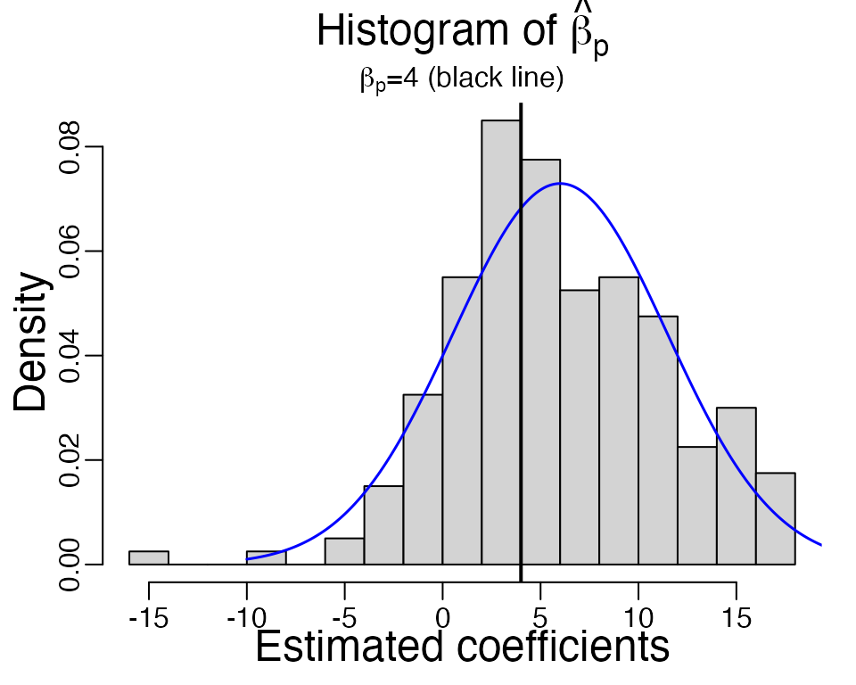

glmhd: statistical inference in high-dimensional binary regression
Qian Zhao
2023-03-29
Source:vignettes/my-vignette.Rmd
my-vignette.RmdIn this vignette we will show you how to use functions in the
glmhd package to estimate the bias and variance of high
dimensional logistic MLE (maximum likelihood estimates). “High
dimension” refers to the setting when the number of observations \(n\) and number of variables \(p\) are both large.
Warm-up
As a recurring example, we consider a logistic regression model.
# Sample from a logistic model
# n - number of samples
# beta - coefficient vector
# R - cholesky decomposition of the covariance matrix (R^t R) of the variables
# adjust - if TRUE, computes the adjusted p-value for H0: beta1 = 0
sample_logistic <- function(n, beta, R, adjust = FALSE){
p <- length(beta) # number of variables
# Generate data matrix
X <- matrix(rnorm(n * p, 0, 1), n, p) %*% R / sqrt(n)
# Sample response
Y <- rbinom(n, 1, 1 / (1 + exp(- X %*% beta)))
# Logistic regression
fit <- glm(Y ~ X + 0, family = binomial, x = TRUE, y = TRUE)
if(!adjust){
# Returns the p-th fitted coefficient and its standard error estimate
c(fit$coef[p], summary(fit)$coef[p, 2])
}else{
# Returns the adjusted p-value for the first coordinate
adjusted_fit <- adjust_glm(fit, verbose = FALSE, echo = TRUE)
summary(adjusted_fit)$coef[1,4]
}
}We pick \(n = 1000\) and \(p = 200\), and set the variables to be from multivariate Gaussian from a AR(1) model with \(\rho = 0.5\). For simplicity, we fix the the first half variables to be null and the second half have fixed coefficients \(\beta = 4\).
We repeat this function \(B = 200\) times, and draw a histogram of the MLE of the \(p\)th coefficient.
beta_hat <- replicate(B <- 200, sample_logistic(n, beta, R))
As we can see, the estimated \(\hat{\beta}\) is not centered at the true value \(\beta = 4\) (black line). The average \(\hat{\beta}\) is at 5.247, which is larger. If we look at a single simulation below, the estimated standard error of \(\hat{\beta}_p\) is 4.175, which is smaller than the observed standard deviation 5.434 from the independent samples.
X <- matrix(rnorm(n * p, 0, 1), n, p) %*% R / sqrt(n)
Y <- rbinom(n, 1, 1 / (1 + exp(- X %*% beta)))
fit <- glm(Y ~ X + 0, family = binomial)
summary(fit)$coef[p,2] # estimated std. from inverse Fisher information
#> [1] 4.17In general, as \(n, p\to\infty\) at
a fixed ratio \(p / n\to \kappa \in (0,
1)\), and if the variables \(X\)
to be multivariate Gaussian, the MLE of any coordinate \(\beta_j\) satisfies \[
\frac{\hat{\beta}_j^\mathrm{MLE} - \alpha_\star \beta_j}{\sigma_\star /
\tau_j} \stackrel{d}{\longrightarrow} \mathcal{N}(0, 1),
\] where \(\tau^2_j =
\mathrm{Var}(x_j\,|\,x_{-j})\) is the conditional variance of
\(j\)th variable given all the others
[1]. These parameters \((\alpha_\star,
\sigma_\star)\) can be computed given \(\kappa = p/n\) and \(\gamma = \sqrt{\mathrm{Var}(X^\top
\beta)}\). In this example, \[
\kappa = 0.2, \quad \gamma = 2.18,
\] and the corresponding \((\alpha_\star, \sigma_\star / \tau_p) =
(1.49,5.37)\). We overlay the theoretical density curve of \(\hat{\beta}_p\) in the above histogram
(blue curve), which agree well with the obeserved histogram overall,
except for a few large \(\hat{\beta}_p\) in simulations. In reality,
the parameter \(\gamma\) is typically
unknown, so in the next section we will use glmhd package
to estimate it.
Adjusting the MLE with glmhd
The goal of glmhd package is to estimate the inflation
and standard deviation of the MLE more accurately than the classical
theory. We use the ProbeFrontier algorithm [2] to estimate the
signal strength parameter \(\gamma\),
and then we estimate the inflation and standard deviation of the MLE.
Now let’s load the library.
We repeat the previous example and compute the MLE. Note that we
specify x = TRUE and y = TRUE here so the
original data matrix is returned in fit.
# fit the MLE again
fit <- glm(Y ~ X + 0, family = binomial, x = TRUE, y = TRUE)Now we call the function adjust_glm to compute the
adjusted MLE and standard error. There are three arguments for this
function, but you only need to input the first one, the output
glm object. Below, the second argument and third arguments
are set at their default values, verbose specifies if
progress should be printed, and echo = TRUE means that the
input glm object is also returned in the output.
Settingverbose = TRUE helps to track progress of the code,
and identify issues if the algorithm fails.
adjusted_fit <- adjust_glm(fit, verbose = FALSE, echo = TRUE)You can access the estimated parameters through
adjusted_fit$param. In this vector,
adjusted_fit$param["alpha_s"] is estimated \(\alpha_\star\) and
adjusted_fit$param["sigma_s"] is estimated \(\sqrt{\kappa}\sigma_\star\). For example,
you can compare the estimated inflation 1.416 with the observed value
1.312.
adjusted_fit$param["alpha_s"] # Estimated inflation
#> alpha_s
#> 1.42
adjusted_fit$param["sigma_s"] / sqrt(p/n) # estimated sigma_star
#> sigma_s
#> 4.13You can obtain the adjusted MLE \(\hat{\beta}^\mathrm{Adj}_p = \hat{\beta}_p^\mathrm{MLE} / \alpha_\star\) and the adjusted standard error estimate \(\sigma_\star / \tau_j\) as follows.
adjusted_fit$coef_adj[p] # Adjusted MLE
#> X200
#> 4.17
adjusted_fit$std_adj[p] # Adjusted std.
#> X200
#> 4.77Next, summary(adjusted_fit) prints the coefficient
table. The first column is the adjusted MLE, the second column is \(\hat{\sigma}_j / \alpha_\star\), because
the adjusted MLE satisfies \[
\frac{\hat{\beta}_j^\mathrm{Adj} - \beta_j}{\hat{\sigma}_j /
\alpha_\star} \approx \mathcal{N}(0, 1),
\] for \(\hat{\sigma}_j = \sigma_\star
/ \tau_j\) the adjusted std. estimate.
print(summary(adjusted_fit), max = 40)
#> Call:
#> adjust_glm(glm_output = fit, verbose = FALSE, echo = TRUE)
#>
#> adjusted_mle std z.value p.value
#> X1 3.6837 3.3982 1.08 0.2784
#> X2 -5.0466 3.8409 -1.31 0.1889
#> X3 2.2015 3.7254 0.59 0.5546
#> X4 1.7436 3.8513 0.45 0.6508
#> X5 -3.0104 3.6758 -0.82 0.4128
#> X6 -3.5051 3.8287 -0.92 0.3599
#> X7 6.1912 3.5640 1.74 0.0824 .
#> X8 -6.4551 3.6305 -1.78 0.0754 .
#> [ reached getOption("max.print") -- omitted 192 rows ]
#> ---
#> Signif. codes: 0 '***' 0.001 '**' 0.01 '*' 0.05 '.' 0.1 ' ' 1Hypothesis testing
The summary function prints the adjusted MLE \(\hat{\beta}^\mathrm{Adj}\) and its std.
\(\hat{\sigma} / \alpha_\star\), as
well as a z-statistics \(z =
\hat{\beta}/\hat{\sigma}^\mathrm{MLE}\) and a two-sided p-value
\(\mathrm{P}(|\mathcal{N}(0,1)|\geq
|z|)\). If the variables are multivariate Gaussian and the true
model is logistic, then this p-value is from a Uniform[0,1] distribution
under the null hypothesis that \(\beta_j =
0\).
The following is a simulation to examine whether the calculated p-value is approximately uniform. For simplicity, we consider the first variable, which is a null, and the function is also included at the beginning.
# pval_adj <- replicate(B <- 100, sample_logistic(n, p, R, adjust = TRUE))You can use the likelihood ratio test (LRT) by calling the function
lrt_glm. It requires two arguments, the first is a list of
glm fits and the second is the param output
from adjust_glm. It prints the likelihood ratio statistics
and p-values computed according to the rescaled chi-squared
distribution. Under the null hypothesis \[
H_0:\quad \beta_1 = \ldots = \beta_k = 0,
\] two times the likelihood ratio statistics \(\Lambda\) is asymptotically a re-scaled
chi-squared variable with \(k\) degrees
of freedom \[
2 \Lambda \stackrel{d}{\longrightarrow} \frac{\kappa_\star
\sigma_\star^2}{\lambda_\star}\chi^2_k.
\]
f1 <- fit
f2 <- glm(Y ~ X[, -1] + 0, family = binomial, x = TRUE, y = TRUE)
# P-values for the LRT
lrt <- lrt_glm(list(f1, f2), param = adjusted_fit$param)
print(lrt)
#> $models
#> $models[[1]]
#> Y ~ X + 0
#>
#> $models[[2]]
#> Y ~ X[, -1] + 0
#>
#>
#> $anova.tab
#> Resid.Df Resid.Dev Df Deviance p.value
#> 1 801 698 NA NA NA
#> 2 800 697 1 1.43 0.314
#>
#> attr(,"class")
#> [1] "lrt_adj"Model with an intercept
The previous example concerns a logistic model without an intercept, you can use the same function call for a model with an intercept. This is a separate section because the theory justification for this algorithm is still under study. The algorithm implemented in this package is based on the following conjecture: \[ \frac{\hat{\beta}_j^\mathrm{MLE} - \alpha_\star \beta_j}{\sigma_\star / \tau_j} \stackrel{d}{\longrightarrow} \mathcal{N}(0, 1), \] and the MLE of the intercept converges to some fixed quantity \[ \hat{\beta}_0 \stackrel{p}{\longrightarrow} b_\star. \] The adjusted MLE is \(\hat{\beta}^\mathrm{Adj} = \hat{\beta} / \alpha_\star\) and adjusted std. is \(\sigma_\star / \tau_j\).
Consider an example where the intercept term \(\beta_0 = - 0.5\). In this example, we can
compute the \((\alpha_\star,
\sigma_\star)\) (they depend on \(\kappa = p/n\), \(\gamma\) and true intercept \(\beta_0\)) and compare them with the
estimates from independent samples. Notice that the input argument
beta_0 for find_param function is the absolute
value of \(\beta_0\).
gamma <- sqrt(sum((R %*% beta)^2/n)) # signal strength
params <- find_param(kappa = p/n, gamma = gamma, beta0 = 0.5, verbose = FALSE)
params[1] # true alpha_star
#> [1] 1.5
params[3] / sqrt(p/n) # true sigma_star
#> [1] 4.74
sample_logistic_intercept <- function(n, beta, R){
p <- length(beta)
X <- matrix(rnorm(n * p, 0, 1), n, p) %*% R / sqrt(n)
Y <- rbinom(n, 1, 1 / (1 + exp(- X %*% beta + 0.5)))
fit <- glm(Y ~ X, family = binomial)
# Returns the p-th fitted coefficient and its standard error
c(fit$coef[p+1], summary(fit)$coef[p+1, 2])
}
beta_hat <- replicate(B, sample_logistic_intercept(n, beta, R))
The observed inflation in 200 samples is 1.483 and observed standard deviation is 5.395. The theoretical density curve of \(\hat{\beta}_p\) is shown in blue, and it agrees well with the histogram of \(\hat{\beta}_p\).
You can use the same function adjust_glm to compute the
adjusted MLE \(\hat{\beta}_j^\mathrm{Adj} =
\hat{\beta}_j^\mathrm{MLE} / \alpha_\star\) and adjusted standard
error \(\sigma_\star / \tau_j\) without
knowing the true parameters.
X <- matrix(rnorm(n * p, 0, 1), n, p) %*% R / sqrt(n)
Y <- rbinom(n, 1, 1 / (1 + exp(- X %*% beta + 0.5)))
fit <- glm(Y ~ X, family = binomial, x = TRUE, y = TRUE)
# Adjust MLE coefficients
adjusted_fit <- adjust_glm(fit, verbose = FALSE)adjusted_fit$intercept returns the estimated intercept,
which you can compare with the MLE -0.959.
adjusted_fit$intercept
#> [1] -0.852You can also find the estimated inflation and standard deviation like before.
# Estimated inflation and std.
adjusted_fit$param["alpha_s"]
#> alpha_s
#> 1.5
adjusted_fit$param["sigma_s"] / sqrt(p/n)
#> sigma_s
#> 4.76
# Adjusted MLE
adjusted_fit$coef_adj[p]
#> X200
#> 4.02
# Adjusted std.
adjusted_fit$std_adj[p]
#> X200
#> 5.55Other link functions
If you are working with a probit model, you can use the
glm function with
family = binomial(link = "probit"), and use the
glm object as input to adjust_glm It
automatically identifies the link function from the family
object.
References
[1] A modern maximum-likelihood theory for high-dimensional logistic regression, Pragya Sur and Emmanuel J. Candes, Proceedings of the National Academy of Sciences Jul 2019, 116 (29) 14516-14525
[2] The Asymptotic Distribution of the MLE in High-dimensional Logistic Models: Arbitrary Covariance, Qian Zhao, Pragya Sur and Emmanuel J. Candes, arXiv:2001.09351